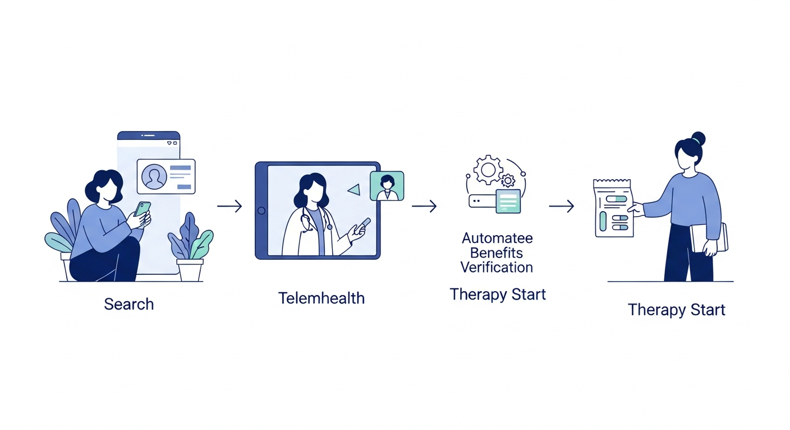
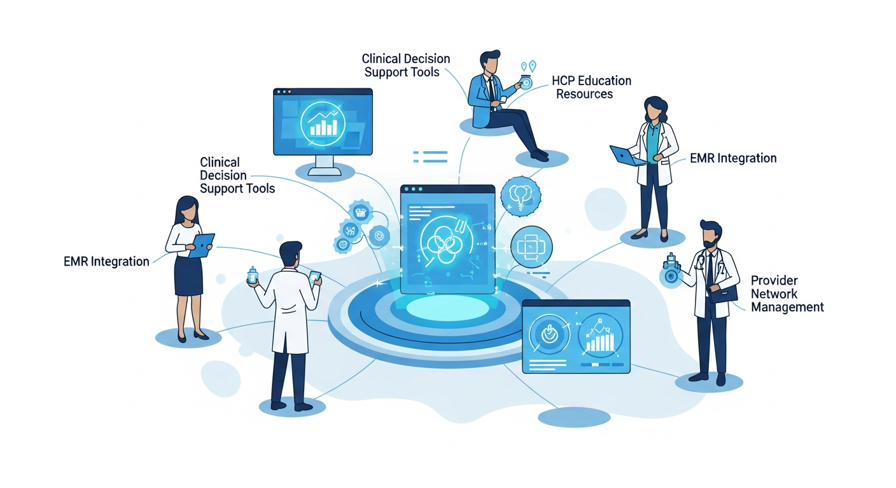
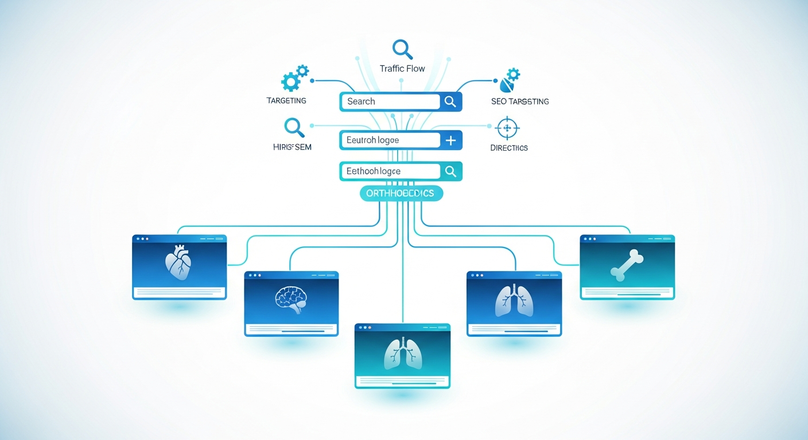
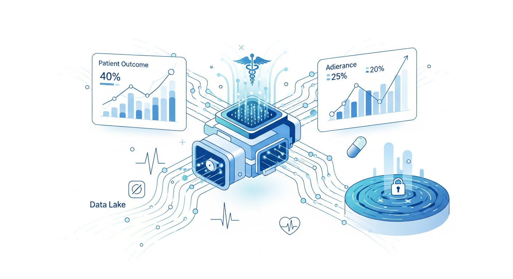

Prescribers default to what they know.
Novel mechanisms get ignored when reps cannot get in the door. HCPs keep writing the drug they wrote last quarter, even when a better option exists.
Klinic is the commercialization partner for specialty and launch-stage pharma. We activate the prescribers already writing in your category, acquire patients directly through our telehealth network, and handle the access work, prior auth, benefits verification, copay, pharmacy routing, on every prescription.
Built for specialty, psych, CNS, GLP-1, MAT, and other launch-stage or underpenetrated brands that need stronger prescriber activation, direct patient demand capture, and cleaner therapy starts.

Real prescribing intelligence. Real prescribers. Real scripts filled.
Most brands do not need another awareness campaign first. They need tighter control over prescriber activation, patient acquisition, and access execution at the exact moment the prescription is written.
Novel mechanisms get ignored when reps cannot get in the door. HCPs keep writing the drug they wrote last quarter, even when a better option exists.
Patients searching for alternatives land on generic education pages, not a provider workflow that can evaluate and prescribe your drug today.
Formulary exclusions, step therapy, and prior auth barriers hit hardest on newer brands. Without proactive support on every Rx, patients abandon before therapy starts.
Klinic brings the demand engine and the operational layer together. We activate the right prescribers, acquire the right patients, and support every prescription through access and fulfillment.
We identify the HCPs already treating your target population, educate them on your drug, and support every prescription they write.
We capture patient demand through SEO, paid, and AI search, then route patients into Klinic's multi-state telehealth network for evaluation and prescribing when clinically appropriate.
PA, BV, copay enrollment, pharmacy routing, denial management, and appeal support sit underneath both channels so no prescription goes unsupported.
No Rx goes unsupported. The prescriber experience stays clean, the patient experience stays fast, and the brand gets tighter visibility into what is slowing therapy starts.
Identify, educate, and activate external HCPs, with access support on every prescription they write.

Mine our e-prescribing intelligence to find the HCPs already treating your target patients. Prioritize the highest-volume, highest-switch-propensity prescribers first.
Deliver targeted clinical education on mechanism of action, competitive switching, patient selection, and safety through channels HCPs actually use.
Onboard providers with point-of-care decision support, an AI knowledge hub, and first-Rx support so writing your drug is frictionless.
Run PA, BV, copay enrollment, and pharmacy routing on every Rx. The HCP never has to chase a denial.
Track script-to-fill conversion and identify access bottlenecks in real time, not weeks after the prescription was written.
Expand activation into adjacent tiers based on early-adopter performance, conversion rates, and switch behavior.

Treat patients directly through Klinic's multi-state telehealth network, with access support built into every visit.
SEO and paid search drive high-intent patients searching for alternatives into a Klinic landing page built for your category.
Online intake captures clinical history, current meds, prior treatment failures, and validated assessments relevant to the indication.
A Klinic provider evaluates the patient, confirms diagnosis, and writes an Rx for your drug when clinically indicated.
Benefits verification, prior auth, copay enrollment, and pharmacy routing are handled before the patient leaves the workflow.
The patient receives medication, follow-up is scheduled, and titration or care-plan guidance is set immediately.
Follow-up visits, symptom monitoring, dose adjustments, and refill management help keep patients on therapy.
Klinic licenses real-time e-prescribing intelligence covering 136,516+ providers nationwide. For any category, psychiatry, endocrine, GI, dermatology, neurology, addiction medicine, and more, we tier providers using the signals that actually matter for launch performance.
Who writes what, how often, and in what volume.
Who just changed their go-to drug, and where adoption velocity is shifting.
Who is already treating the patient profiles most likely to need your drug next.
Where the real decision-maker sits across the specialty and referral network.
| Tier | Who they are |
|---|---|
| Tier 1 - Switchers | HCPs actively changing patients off current standard of care. Highest switch propensity, fastest adopters. |
| Tier 2 - Category specialists | High-volume prescribers in your category who have not adopted your drug yet. Education wins here. |
| Tier 3 - Active prescribers | Any confirmed prescribing activity in your category. Prime expansion targets once the first two tiers are moving. |
| Tier 4 - Specialty network | Providers with activity in adjacent categories. Long-tail adoption and network expansion sit here. |
Community and academic oncologists segmented by tumor type, line of therapy, and biomarker-driven prescribing.
Centers of excellence, genetic counselors, and the small set of specialists who actually see your indication.
Prescribers moving patients from triptans and oral preventives to CGRPs, or from platform therapies to high-efficacy MS agents.
Biologic-writing rheumatologists ranked by DMARD history, biologic velocity, and indication mix.
Biologic-writing dermatologists ranked by patient severity, prior-biologic failures, and injectable versus oral preference.
GI and hepatology prescribers segmented by IBD biologic patterns, liver panel volume, and NASH-ready patient populations.
Severe-asthma biologic prescribers, COPD stepped-up regimens, and IPF antifibrotic use segmented by severity.
Prescribers switching patients between semaglutide, tirzepatide, and oral alternatives, tracked by indication, dose, and switch direction.
HF-focused cardiologists writing SGLT2s, ARNIs, and novel heart-failure agents, ranked by volume and recent shifts.
28,908 augmentation prescribers treating patients who failed SSRIs or SNRIs, visible across roughly 229K augmentation scripts per month.
DEA-waivered buprenorphine prescribers ranked by volume, retention rate, and specialty density across addiction medicine, psychiatry, and primary care.
Non-opioid pain prescribers, interventional pain specialists, and PCPs managing chronic pain, segmented by modality mix and switch patterns.
OB-GYNs, reproductive endocrinologists, and NP or CNM prescribers segmented by menopause, contraception, and fertility prescribing velocity.
HIV specialists ranked by ART regimen patterns, viral-suppression volume, and PrEP prescribing, with strong telehealth pull for discreet care.
Retinal specialists writing anti-VEGFs, glaucoma prescribers, and dry-eye specialists, ranked by injection volume and formulary position.
Heme prescribers segmented by disease state, including MPNs, sickle cell, von Willebrand, and other bleeding disorders.
Urologists segmented by LUTS and BPH prescribing, overactive bladder step patterns, and uro-oncology overlap.
Tiers and counts are rebuilt live for your category.
Klinic builds condition-level SEO pages, paid search campaigns, and AI-search-optimized content for your drug's category. We own the real estate across Google Search, ChatGPT, Perplexity, Claude, and social, then convert that demand into same-day clinical access.
Whatever the search intent looks like for your drug, Klinic owns the landing page, and can see the patient the same day.
The shared access layer sits underneath both channels. Your HCPs do not chase denials. Your patients do not stall at the pharmacy counter. Klinic handles the operational lift needed to turn written scripts into therapy starts.
Submitted and actively followed up on for every relevant Rx.
Completed before the patient leaves the workflow whenever possible.
Manufacturer programs applied automatically where available.
Preferred specialty or retail channel selected based on plan requirements.
Triaged, reworked, and tracked instead of being dropped or buried.
Backed by clinical documentation and provider workflow support.
Both channels feed a single analytics layer. You get visibility from first impression to therapy start across prescriber activation and direct-to-patient in one view.

Not a media agency. Not a pure telehealth shop. Not a bolt-on hub. Klinic combines prescriber activation, patient acquisition, clinical access, and fulfillment support inside one operating layer.
9.8M e-prescribing records across 136K providers nationwide. Real data, not directional guesswork.
Condition-level SEO, paid, and AI-search content capture high-intent patients the moment they search.
Klinic does not just market. We evaluate, prescribe, route, fulfill, and monitor.
PA, BV, copay, and pharmacy routing sit inside the workflow from day one, not as an afterthought.
Klinic works best when the brand is differentiated and adoption needs real operating leverage, not more disconnected vendors.
Brands that need prescriber education, patient demand capture, and access execution live at the same time.
Products fighting formulary entrenchment and category habits that slow early adoption.
Programs where patient discovery and specialist concentration are the true bottlenecks.
Start with the right HCP list, connect it to real patient demand, and support every prescription all the way to therapy start.